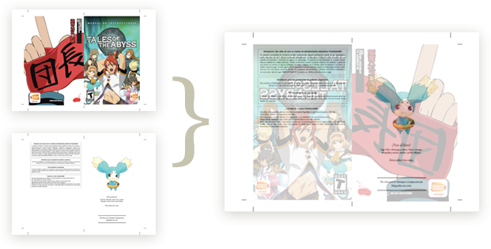
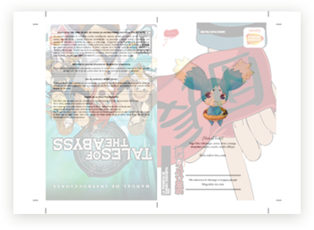
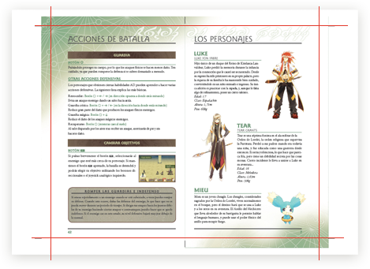

Descargar
Manual
17,8MB • PDF
Manual para imprimir
12,5MB • PDF
Carátula y galleta
¡Desastre! ¡Aún no están listas!
Manual del juego traducido
Además del juego propiamente dicho, hemos traducido el manual de instrucciones que le acompaña, para que nadie tenga ningún problema a la hora de empezar a jugar, ni ahora ni en el futuro. Está maquetado desde cero (es decir, no son escaneos guarros modificados), e imita el diseño del manual original.
Material para imprimir
Hemos hecho dos versiones. Por un lado, la versión para leer en pantalla, con una página detrás de la otra y sin mayor misterio, y por otro, una versión preparada para imprimir.
Para ello necesitarás una impresora de doble cara (aunque suena raro, cada día son más habituales), o acudir a cualquier imprenta o papelería donde sepas que pueden imprimir por las dos caras. Se ha de imprimir en Din A4, y te recomendamos buscar algún papel con gramaje y textura similar al de los manuales originales (muy poco gramaje y con tacto de cutre), para que el efecto sea lo más parecido al real posible.
Montaje del manual
En el PDF las páginas vienen preparadas para ser impresas de esta manera:
- La primera página, que contiene la contraportada y la portada, se ha de imprimir en una hoja de papel.
- La segunda página, que contiene el aviso de seguridad y a Mieu, se ha de imprimir en la misma hoja pero por el lado contrario, coincidiendo el aviso con la portada y Mieu con la contraportada.
- La tercera página, que contiene los créditos y el índice, se ha de imprimir en una hoja nueva.
- Por el lado contrario estará la cuarta página, con el esquema de la PS2 y la sección de batallas multijugador, coincidiendo el esquema con el índice y lo de multijugador con los créditos.
- Y así sucesivamente. Al final, tienes que tener 13 hojas de papel impresas por ambos lados.

La primera y la segunda página del PDF impresas en el mismo papel por ambas caras.
Muy importante: es esencial que las dos caras del mismo papel miren hacia el mismo lado. En según qué impresoras no se indica demasiado bien si se está imprimiendo todo mirando hacia la misma dirección o no, pero has de tener en cuenta que si una página tiene el encabezado arriba, la parte de detrás tiene que tener el encabezado arriba.

FAIL
A la hora de imprimir, has de hacerlo sin escalar la página. En según qué impresoras por defecto se reduce el dibujo si no cabe dentro de los límites de impresión; oblígala, amenázala o extorsiónala, pero que no imprima las páginas más pequeñas. Da igual que dos milímetros de lateral se queden sin imprimir, de verdad. Si no tienes cuidado con esto, el manual quedará más pequeño de lo normal.
La página ha de imprimirse en formato apaisado (es decir, de lado), para que cada página quepa bien en el A4. El dibujo debe estar centrado, para que encaje bien una cara con la otra.
Antes de imprimir las 26 páginas, te recomendamos que hagas una página de prueba para comprobar que todos los ajustes son correctos. También te recomendamos imprimir con la máxima calidad, porque aunque la tinta se vende más cara que el petróleo (literalmente), queda mucho mejor que si se imprime de malas maneras. Con impresoras láser, un papel adecuado y mucho amor, el acabado es difícil de diferenciar con el del manual oficial.
Una vez has impreso todo, tienes que cortar los bordes. Lo mejor es emplear una guillotina, para cortar todo el lateral de un solo tajo y evitar que aquello baile más que la firma de un niño, aunque también puede hacerse con una regla y un cutter. Usar las tijeras aquí es muy mala idea porque tendrás que cortar guiándote de tu instinto, y estamos bastante seguros de que te dejará tirado en el peor momento.
Como habrás observado, cada página tiene unas marquitas en las esquinas. Esas marcas indican por dónde hay que cortar. Une las líneas con la regla y corta.

"¡Horror!", dirás. "¡Pero así se corta un cacho de la página!" No pasa nada, porque está hecho así adrede. Si miras una de las hojas con un foco detrás para que se transparenten las dos caras, verás que ambos lados no encajan exactamente. No existen las impresoras que impriman exactamente igual dos papeles, así que hay que dejar un margen de seguridad respecto al tamaño al que se quieren hacer las cosas, por si acaso. En el manual hemos puesto un sangrado de 8mm, así que una de las caras puede desplazarse casi un centímetro respecto a la otra sin que ocurra un desastre. No obstante, quedará más feo, así que cuanto menos se desplacen, mejor.
Cuando tengas todas las hojas cortadas al mismo tamaño, (intenta que queden lo más similares posibles), dobla las páginas por la mitad. Fíjate bien en hacia qué lado las doblas, porque hay dos opciones y sólo una es la correcta. Por ejemplo, en el caso de la primera página, la portada y la contraportada han de quedar hacia afuera. Lo mejor es empezar por esa página, y a partir de ahí ir fijándose en el orden.
Una vez estén todos los pliegos recortados, doblados, en orden y alineados, pon una par de grapas en medio. Dependiendo de la grapadora que utilices, quizá no llegues bien al centro exacto del manual, así que antes de intentar una chapuza, busca una más grande. No es difícil, no obstante.
Y una vez hecho esto, con sus grapitas y todo, tendrás tu manual listo para meter en su caja.
Carátulas y galleta
Estamos trabajando en ellou.